| [Top] | [Contents] | [Index] | [ ? ] |
| 1. Introduction | ||
| 2. Reading conventions | ||
| 3. XWHEP | Overview, architecture and features | |
| 4. Getting XWHEP | Downloading packages from our web site. | |
| 5. Setting up XWHEP | Requirements and compilation | |
| 6. Monitoring the platform | Monitoring a deployment using ganglia, webalizer and more | |
| 7. Running and using the platform | Server , client and worker usages | |
| 8. Connecting XWHEP to other grids | Sharing resources between different grid families | |
| 9. Troubleshooting and reporting bugs | ||
| 10. Papers | ||
| 11. Index | ||
| • Table of contents |
| [ < ] | [ > ] | [ << ] | [ Up ] | [ >> ] | [Top] | [Contents] | [Index] | [ ? ] |
XtremWeb for High Energy Physics (XWHEP) is a global computing platform aiming to aggregate volunteer computing resources over the Internet. Contrary of what the name could make readers think, this is a general purpose platform, not specifically dedicated to High Energy Physics (HEP) community. The name should preferably be understood as XtremWeb BY High Energy Physics.
Historycally speaking, XtremWeb is a project initiated by Laboratoire de Recherche en Informatique (LRI).
In a pluri-disciplinal initiative, Laboratoire de l'Accélérateur Linéaire (LAL)
and LRI joined their efforts to make what was a research platform aiming to study
large scale distributed systems (LSDS) to a full production platform, naturally using HEP applications
as first use cases (naturally, since LAL is an HEP laboratory).
This common work having been a success, LAL continued not only to work with the platform in production,
but also to extend and improve it in several ways under the name of XWHEP.
XWHEP was initially based on XtremWeb 1.8.0.
This document first presents XWHEP and its innovative features; then describes how to compile, install and deploy the platform. The last chapter is about inter-grid connections, the goal of such a feature, its security issues and finally how to make such inter-connections operable.
The targeted audience is not only developpers and administrators willing to deploy an LSDS, but also end users that can gain access to a new computing power. Finally volunteer PC owners who would like to participate to exciting research fields will also find useful informations here, on how to install and manage their PC as part of a global virtual cluster.
| [ < ] | [ > ] | [ << ] | [ Up ] | [ >> ] | [Top] | [Contents] | [Index] | [ ? ] |
variables are refered like this : ${install.dir};
${version} refers to the version of XWHEP (currently 5.7.5);
code samples are given using courrier font
$> |
| [ < ] | [ > ] | [ << ] | [ Up ] | [ >> ] | [Top] | [Contents] | [Index] | [ ? ] |
| [ < ] | [ > ] | [ << ] | [ Up ] | [ >> ] | [Top] | [Contents] | [Index] | [ ? ] |
XtremWeb-HEP is a middleware permitting to deploy a Global Computing platform (Large Scale Distributed System). XWHEP belongs to the so called Cycle Stealing environment family. Like the other Distributed System Platforms, an XWHEP platform uses remote resources (PCs, workstations, PDA, servers) connected to Internet or a pool of resources inside a LAN. Participants of an XWHEP platform cooperate by providing their computing ressources, such as processor, memory and/or disk space.
XWHEP is a project belonging to light weight GRID systems. Its a Free Software (GPL), Open Source and non-profit software platform to explore scientific issues and applications of Global Computing and Peer to Peer distributed systems.
The XWHEP software platform allows to setup and run Distributed System projects. Such project must be based on a community of participants. For example, XWHEP platforms allow a High School, a University... or a Company to setup and run a Global Computing or Peer to Peer distributed system for either a specific application or a range of applications.
| [ < ] | [ > ] | [ << ] | [ Up ] | [ >> ] | [Top] | [Contents] | [Index] | [ ? ] |
The XWHEP project is made of three parts:
the server is the centralized part in charge of the platform management; it is detailed on section XWHEP server;
the worker is a distributed part deployed on PCs over the internet to provide computing ressources; it is detailed on section XWHEP worker;
the client is a distributed part deployed on PCs over the internet which interacts with the platform; it is detailed on section XWHEP client.
This architecture corresponds to most of well known global computing
projects where a centralized server ensures the platform coherency, integrity
and security, while distributed parts (clients and workers) have, respectively,
the user interface and computationnal capacities responsabilities.
The server and its distributed part are known as the middleware and form
alltogether a deployment or a network.
The centralized server is the only trusted entity.
It must be highly secure and maintained by the platform administrator to
ensure security and quality of service (QoS) of the full platform.
Distributed parts are entirely untrusted by essence.
The middleware ensures a global security and QoS levels by implementing
expected services and protocols.
The middleware is written to ensure a good fault tolerancy by detecting faults and, more generally, by considering volatility as a feature (and not a misbehavior). One of the major features that was already implemented in XtremWeb 1.8.0 is the server replication (as described in "RPC-V: Toward Fault-Tolerant RPC for Internet Connected Desktop Grids with Volatile Nodes.").
XWHEP extends the XtremWeb server by introducing the notion of datas and access rights. The server may act as a data server, but datas can be stored anywhere as soon as they are accessible by URI. Current version includes HTTP the Web standardized access protocol, ADICS a peer to peer architecture for data intensive cycle sharing (see www.p2p-adics.org/) and implements its own new schema, xw://.
Architecture
| [ < ] | [ > ] | [ << ] | [ Up ] | [ >> ] | [Top] | [Contents] | [Index] | [ ? ] |
As a system software, XWHEP allows you to:
use a Peer-to-Peer computing platform.
participate (provide computing ressources) to a Global Computing or a Peer-to-Peer Project by joining an XWHEP platform (see the projects links on the main page),
be collaborator of XWHEP by helping us developing XWHEP ,
easily build your own General Purpose Global Computing System.
Participants may download the Worker software to participate. XWHEP Worker examines constantly the workload of your PC. When the workload becomes insignificant, your PC starts participating to a world wide experiment (research or large contests). For most of the PCs, the computation is done during the night.
Any one can download the entire software (Worker, Server, Lan administrator) to setup their own XWHEP platform.
Large institutions that are spred among several geographical sites and that are using cycle stealing to increase their computational power may use XWHEP to manage all the resources through a single environment. By downloading the entire XWHEP system you will be able to launch a Global Computing or a Peer-to-Peer Computing system. To do so, you will have to setup a community of workers. Dedicated Global Computing System particularly match the requirements of institutions like Schools, Universities, Laboratories, Libraries, Factories, Industries, ..., Companies that need a system allowing the use of idle resources during the nights or week-end.
| [ < ] | [ > ] | [ << ] | [ Up ] | [ >> ] | [Top] | [Contents] | [Index] | [ ? ] |
XWHEP is a generic multi purposes desktop grid platform (DG) enabling eSciences computations over volatile nodes.
three tiers architecture with a centralized scheduller
multi platforms (win32, linux, mac os x)
virtual stable cluster over volatile volunteers individual PCs
protocol agnostic
data server
multi applications
multi users
firewall bypassing
automatic load balancing
fault tolerance
| [ < ] | [ > ] | [ << ] | [ Up ] | [ >> ] | [Top] | [Contents] | [Index] | [ ? ] |
The platform introduces the notion of users, which must be understood just like in a cluster. An user is an entity that has the rights to perform some actions within the platform such as insert an application, submit a job, retreive a job result and more. An user is defined by its login and password(1).; users have the responsability to ensure confidentiality and integrity of these informations. These informations are always needed to connect to the platform. They are sent with all messages; messages without these informations or with invalid ones are rejected by the server. They also define actions the user has the rights to execute (see User rights). We can understand here that roles are not statically defined; they are dynamically defined by actions an user is allowed to request to server. An user identity that can be used to submit applications, datas and jobs may be considered as a client (this identity can be used to do so if the server allows requested actions for that identity). An identity that can be used to compute jobs may be considered as a worker (i.e. a distributed computing element - see Volunteer computing management).
An user may belong to a user group and not more than one. This helps to confine datas, applications, jobs and workers. With this feature, the platform defines three usage levels: public, group and private as shown in figure "Usage levels". The public level is the default one where applications, datas and jobs are public, accessible by all users, accordingly to their access rights (see Access rights).
Usage levels
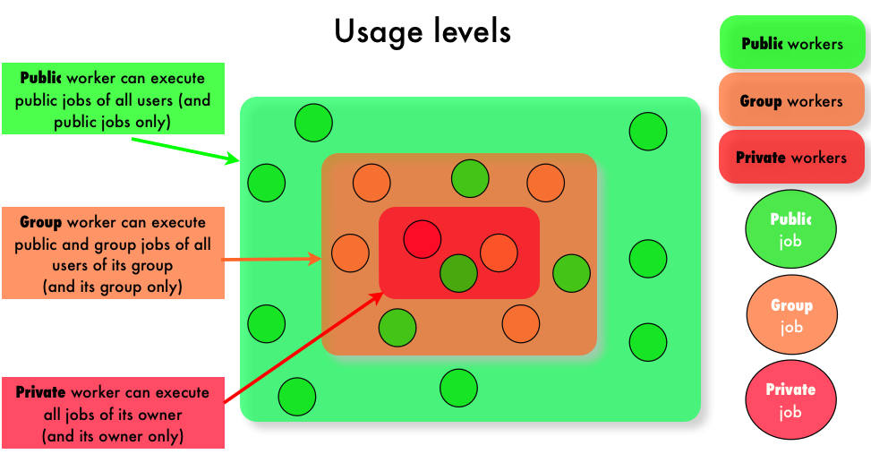
Public usage level. By default users are public: they don't belong to any group. They can use public applications and datas, submit public jobs that can be run by public workers. Public applications, datas and jobs are those accessible by all users accordingly to their access rights (see Access rights).
A public worker is a worker that has enough user rights to execute public applications. A public applications must be inserted by an user that is defined with administrator user level (see User rights). The application access rights defines the job ones; this is enforced by the server and there is no way modify this: any job referring a public application is public.
Group usage level. Users belonging to an user group can not only access public applications, datas, jobs and workers, but also those of its group. Note that an user can belong to one user group only. Applications, datas, jobs and workers are in an user group if and only if their owner belongs to an user group. The group access rights does not allow users not belonging to the group to access objects of the group.
A group worker is a public worker defined a group: its identity is defined in the group and has enough user rights to execute group application. A group applications must be inserted by an user that is defined with administrator user level. The application access rights defines the job one; this is enforced by the server and there is no way modify this: any job referring a group application is a group job.
Users defined in a group can still submit public jobs by referring a public applications. A group worker will execute any public job as soon as it is the same user group of the job owner.
Private usage level. Finally, applications, datas, jobs and workers may be private ones. Only the owner can access private objects. Users that don't have administrator user level can insert private applications and private ones only. This mechanism aims to protect workers against malicious or erroneus code. The application access rights defines the job one; this is enforced by the server and there is no way modify this: any job referring a private application is a private job. Such jobs can only be executed by private workers only. A private worker is worker presenting a non privileged identity (i.e. anything but not a public worker). A private worker will execute jobs of its owner only: private, group or public jobs.
The middleware includes several commands to manage users within the platform; please refer to User management with the XWHEP client.
| [ < ] | [ > ] | [ << ] | [ Up ] | [ >> ] | [Top] | [Contents] | [Index] | [ ? ] |
Each user identity is associated a user level which aims to determine actions the user can perform on the platform. Figure User rights shows the user levels stack.
User rights
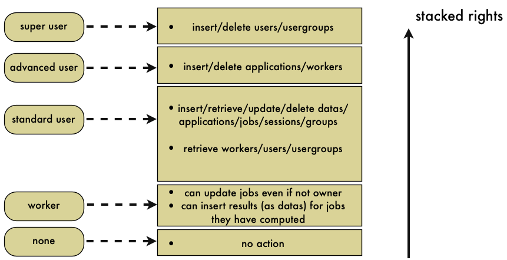
The user levels are as follow:
Standard user level defines a non privileged level which can be used to insert, modify and delete its own applications, datas, sessions, groups and jobs. A standard user can not insert public applications, but private ones only. On the other hand, it can insert private, public and group jobs and datas.
Advanced user level defines a privileged level which is stacked over standard level and can also be used to insert, modify and delete public applications and workers. This is the minimal level to insert group and public applications.
Super user level defines a privileged level which is stacked over advanced level and can also be used to insert, modify and delete users and user groups.
Worker level is a very special case aiming to override access rights according to some security issues. This level is lower than standard one. Hence it cannot be used to insert/modify/delete anything (applications, datas, jobs etc.). This level can only be used to download a job and its associated datas (typically to compute the job), update the job and insert its result (as a data). To do so, the worker must be noted as managing (e.g. running) the given job. If this condition is fullfilled, the worker can modify the job (i.e. set the job status to COMPLETED etc.), overriding the job access rights. It also gains delegation rights to insert a new data, the job result, for another user (the job owner).
The middleware includes several commands to manage users within the platform; please refer to User management with the XWHEP client.
| [ < ] | [ > ] | [ << ] | [ Up ] | [ >> ] | [Top] | [Contents] | [Index] | [ ? ] |
The platform introduces the notion of access rights which must be understood as file system ones.
Access rights are used to confine access of applications, datas and jobs. They define authorizations for the owner, the group and other users :
0400 Allow read by owner.
0200 Allow write by owner.
0100 For applications, allow execution by owner.
0040 Allow read by group members.
0020 Allow write by group members.
0010 For applications, allow execution by group members.
0004 Allow read by others.
0002 Allow write by others.
0001 For applications, allow execution by others.
Access rights can be combined to define access levels:
Private : 0x700
Group : 0x750
Public : 0x755
Access rights rules :
Access rights can only be modified by owner and privileged users.
Application access rights are public by default if the application is inserted with advanced user level.
They are private otherwise.
There is no way to change applications access rights.
Job access rights are those of the referred application.
There is no way neither to override this rule, nor to change job access rights.
Public applications are referred by public jobs only; group applications by groups jobs only; private applications by private jobs only.
A job should never refer any datas with a lower access rights (e.g. a public job should never refer private or group datas). Because there is no predictable way to determine which worker will manage the job.
If a user inserts a private datas and uses it with a public job, that job could only be successfully computed by a private worker.
In the case the job is managed by a public worker (which is highly probable since the job is public), that worker will not be able to retreive the private data expected by the public job. That public worker will then set the status of this public job as ERROR.
In one word, public jobs should always refer to public datas, group jobs should always refer to group datas; and private jobs should always refer to private datas.
Data access rights are public by default. Data access rights only apply for datas stored on XWHEP server (see Data management).
The middleware includes several commands to manage access rights within the platform; please refer to Client generic actions.
| [ < ] | [ > ] | [ << ] | [ Up ] | [ >> ] | [Top] | [Contents] | [Index] | [ ? ] |
The platform trust nothing and implements all required mechanisms to ensure its integrity, as well as integrity of its installed applications, datas, jobs and connected workers.
As described in this document, Access rights, User management and User rights ensure all together the expected security level so that :
user management ensures security
user groups and access rights ensure confidentiality.
the server itself ensure integrity and perennation.
| [ < ] | [ > ] | [ << ] | [ Up ] | [ >> ] | [Top] | [Contents] | [Index] | [ ? ] |
A volunteer computing resource is called a worker in XWHEP.
A worker is a computationnal entity aiming to execute jobs and return their results.
A worker is typically a personnal computer.
The platform aggregates some informations from the worker but no personnal datas.
Informations are CPU type and performances, memory and disk availability, and IP adress.
The platform uses worker CPU powers accordingly to worker local activation policies, in a non intrusive mode.
The owner keeps total control of its machine and its installed worker.
See Control the XWHEP worker.
The platform administrator keeps the ability to revoke any workers at any time. See Worker management with the XWHEP client.
| [ < ] | [ > ] | [ << ] | [ Up ] | [ >> ] | [Top] | [Contents] | [Index] | [ ? ] |
The middleware includes several commands to manage datas within the platform; please refer to Data management with the XWHEP client.
| [ < ] | [ > ] | [ << ] | [ Up ] | [ >> ] | [Top] | [Contents] | [Index] | [ ? ] |
The middleware includes several commands to manage applications within the platform; please refer to Application management with the XWHEP client.
| [ < ] | [ > ] | [ << ] | [ Up ] | [ >> ] | [Top] | [Contents] | [Index] | [ ? ] |
| [ < ] | [ > ] | [ << ] | [ Up ] | [ >> ] | [Top] | [Contents] | [Index] | [ ? ] |
The middleware includes several commands to manage jobs within the platform; please refer to Jobs management with the XWHEP client..
| [ < ] | [ > ] | [ << ] | [ Up ] | [ >> ] | [Top] | [Contents] | [Index] | [ ? ] |
full usage of X509 certificates;
result certification is not impletemented at all since it is a huge problem;
worker sandbox is ready for Mac OS X 10.5 but not inserted in the current release. A sandbox feature is ready to use for all Linux platforms.
replication and pessimistic message logging are implemented to prevent faults but not fully functionnal yet;
server migration is planned
| [ < ] | [ > ] | [ << ] | [ Up ] | [ >> ] | [Top] | [Contents] | [Index] | [ ? ] |
| 4.1 Downloading XWHEP source package | ||
| 4.2 Downloading XWHEP binary package |
The XWHEP package is downloadable from the web site.
You will find there sources and installers.
| [ < ] | [ > ] | [ << ] | [ Up ] | [ >> ] | [Top] | [Contents] | [Index] | [ ? ] |
There are two ways to get the XWHEP sources; you can:
download them from the web site;
You get XWHEP-${version}.tar.bz2.
Untar it with the command
|
get them from the XWHEP SVN.
One SVN commands are necessary:
|
Where ${version} is the current version number (e.g 6.0.0).
| [ < ] | [ > ] | [ << ] | [ Up ] | [ >> ] | [Top] | [Contents] | [Index] | [ ? ] |
There are two ways to get the XWHEP sources; you can:
download them from the web site;
You get XWHEP-${version}-bin.tar.gz.
Untar it with the command
|
| [ < ] | [ > ] | [ << ] | [ Up ] | [ >> ] | [Top] | [Contents] | [Index] | [ ? ] |
The XWHEP deployment is a three steps process
generate the binary package from source one (or directly download the binary package from XtremWeb-HEP web site)
generate server, worker and client installation packages from XWHEP binary package
install server and deploy workers and clients
This chapter is divided as follow:
| 5.1 Pre-requisit | ||
| 5.2 Building from sources | ||
| 5.3 Building the deployment packages. | ||
| 5.4 Deploying the platform |
| [ < ] | [ > ] | [ << ] | [ Up ] | [ >> ] | [Top] | [Contents] | [Index] | [ ? ] |
There are some requirements in order to be able to use XWHEP packages (both source and binary).
All requirements are tested at deployement time (see Building the deployment packages.).
Pre-requisit to install XWHEP are:
A Mysql server. You must have a MySQL server up and running. Be sure that the following condition are met :
Your server accept network connection. Please verify in the mysql configuration file (usually `/etc/mysql/my/cnf' that the field skip networking is commented.
You have an account who holds enough privileges to add user and create databases. If you don't please ask your database administrator to help you.
A Java environment (Sun JDK 1.5 or above is mandatory)
Several third partie Java classes are needed. They are included in XWHEP package:
jsse1.0.2 composed of `jcert.jar', `jnet.jar', `jsse.jar' for SSL (OpenSSL);
`openxml-1.2.jar'(OpenXML), `MinML.jar'(MinML) for parsing XML;
`antlr.jar' is a lexical translator (ANTLR) to parse service calls;
`hsqldb.jar', a 100% Java SQL DataBase Engine, (HSQLDB) to embed database in server;
`mysql-connector-java-5.1.6-bin.jar' (MySQL) to access MySQL databases;
| [ < ] | [ > ] | [ << ] | [ Up ] | [ >> ] | [Top] | [Contents] | [Index] | [ ? ] |
| 5.2.1 Sources package structure | ||
| 5.2.2 Preparing the build process | ||
| 5.2.3 Preparing the binary package | ||
| 5.2.4 What have been installed |
You are not compelled to build XWHEP from sources, you can download the binary package from the XtremWeb-HEP web site. If you have done so, you can directly go to next section.
The XWHEP middleware is written in Java language, hence the Java package is the first
requirement to build and run XWHEP .
The build process use the Apache Ant build tool; it first expects the JAVA_HOME
environment variable to be set.
Note for Windows users: it is possible to configure, build and install XWHEP in this platform, using Cygwin. This should work, but is not supported.
| [ < ] | [ > ] | [ << ] | [ Up ] | [ >> ] | [Top] | [Contents] | [Index] | [ ? ] |
The package contains seven directories:
`benchmark/', a set of scripts to benchmark the platform
`build/', needed files to compile, install etc.;
`classes/', Third Party classes;
`doc/', this documentation files;
`misc/', several needed files, such as config ones;
`php/', WEB SITE (php scripts) files;
`src/', sources directory hierarchy.
You don't have to set any environnement variable, but for the following of
the installation procedure, we assume that ${sources.dir} is the place
where XWHEP sources are stored and ${install.dir} is the installation directory
(where make install installs the binary package).
| [ < ] | [ > ] | [ << ] | [ Up ] | [ >> ] | [Top] | [Contents] | [Index] | [ ? ] |
Several parameters should be set in `build/build.conf' configuration file to build and install the binary package.
install.dir : contains the directory where the binary package will be installed
install.www.dir : contains the directory where the PHP pages will be copied
ganglia.www.dir : contains the directory where the ganglia templates for XWHEP will be copied
xwidl.opts : you should never modify this
| [ < ] | [ > ] | [ << ] | [ Up ] | [ >> ] | [Top] | [Contents] | [Index] | [ ? ] |
The source package can prepare the binary package which aims to generate deployment packages. Binary package usage is described in next section.
At this point, you must have first read Preparing the build process.
As soon as `build/build.conf' has been edited, you can build and install the binary package using :
$> |
Installation process includes several steps (assuming build.conf is correct...) :
distrib : this compiles the Java files
package : this install the binary package
doc : this generates the JavaDoc (API documentation)
install : this installs the binary package
uninstall : this removes the binary package
clean : this removes compiled Java files (but leaves the installed binary package)
| [ < ] | [ > ] | [ << ] | [ Up ] | [ >> ] | [Top] | [Contents] | [Index] | [ ? ] |
| [ < ] | [ > ] | [ << ] | [ Up ] | [ >> ] | [Top] | [Contents] | [Index] | [ ? ] |
| 5.3.1 Binary package structure | ||
| 5.3.2 Running the binary package configuration script | ||
| 5.3.3 What have been installed |
The binary package aims to generate server, worker and client installation packages.
These packages help to deploy the platform.
At this point, you either generated the binary package from source package as described in previous section, or downloaded the binary package from the web site.
We can not directly propose packages from our web site since it is impossible to create generic installers because each deployment has its own private datas (mysql configuration, electronic keys etc.).
If you have downloaded the XWHEP source package, please refer to previous section.
| [ < ] | [ > ] | [ << ] | [ Up ] | [ >> ] | [Top] | [Contents] | [Index] | [ ? ] |
The package contains seven directories:
`apptest/', a simple application to test XWHEP
`bin/', XWHEP scripts
`conf/', configuration files
`doc/', this documentation files;
`installers/', linux, Win32 and Mac OS X packages
`keystore/', electronic keys
`lib/', needed jar files
You don't have to set any environnement variable, but for the following of the installation procedure, we assume that ${install.dir} is the installation directory.
| [ < ] | [ > ] | [ << ] | [ Up ] | [ >> ] | [Top] | [Contents] | [Index] | [ ? ] |
The procedure is explained in the tutorial.
| [ < ] | [ > ] | [ << ] | [ Up ] | [ >> ] | [Top] | [Contents] | [Index] | [ ? ] |
| [ < ] | [ > ] | [ << ] | [ Up ] | [ >> ] | [Top] | [Contents] | [Index] | [ ? ] |
If you have followed the procedure explained in the tutorial, you now have your installation packages ready.
| [ < ] | [ > ] | [ << ] | [ Up ] | [ >> ] | [Top] | [Contents] | [Index] | [ ? ] |
The middleware comes with monitoring tools on three different levels:
At the grid level: Our middleware includes necessary tools to collect ganglia metrics from an XWHEP deployment.
Ganglia is a free scalable distributed monitoring system for high-performance computing systems such as clusters and Grids.
It is available at http://ganglia.sourceforge.net/.
Our middleware also proposes ganglia Web templates to easily integrate ganglia Web front end.
To use this monitoring facility, you must first install ganglia and its web front end on your server. Then copy the directory `<SRCDIR>/php/ganglia/templates/XtremWeb/' into `<GANGLIAWEBFRONTEND>/templates/'. You should then have a `<GANGLIAWEBFRONTEND>/templates/XtremWeb' containing several `*.tpl' files.
You must start the `bin/xtremweb.ganglia' service which launches a pseudo ganglia gmond. This service replace ganglia gmond service and listen to port 8694.
You must then configure ganglia gmetad service with a new data source. To do so, insert the next line in your gmetad configuration file (typicaly `/etc/gmetad.conf') where you can replace "localhost" by you server host name, but must keep port 8694:
data_source "XWHEP" localhost:8694 |
You can now see you ganglia reports using you web browser and monitor your XWHEP deployment.
At the communication level: Our server automatically writes its log files, conforming to standard common logfile format (CLF).
You can find your server log files in `/tmp/XW.SERVER.<YOURSERVERNAME>/' (assuming `/tmp' is your server local path, as defined in your server configuration file).
These log files can be parsed with any log analysis program, such as Webalizer which is free and available at http://www.mrunix.net/webalizer/.
At the server level: Finally, our middleware proposes a script to be run on server side: `bin/monitoring.sh'. This script collects CPU, open files and available memory informations. It was mainly designed to debug the platform, but can still be used to monitor the server host (linux only). Output files (one per day) are in CSV format and can be easily parsed to generate graphs. This CSV format is also readable by calculator like MS-Excel or Number by Apple.
| [ < ] | [ > ] | [ << ] | [ Up ] | [ >> ] | [Top] | [Contents] | [Index] | [ ? ] |
This section describes how to manage and use the three XWHEP parts:
| 7.1 XWHEP server | ||
| 7.2 XWHEP worker | ||
| 7.3 XWHEP client |
| [ < ] | [ > ] | [ << ] | [ Up ] | [ >> ] | [Top] | [Contents] | [Index] | [ ? ] |
| 7.1.1 Configuring the XWHEP server | ||
| 7.1.2 Launching XWHEP server |
The server is the centralized part in charge of the platform management. It aims to receive jobs requests from clients, schedule them on workers until succesfull completion, collect results and forward them back to clients.
| [ < ] | [ > ] | [ << ] | [ Up ] | [ >> ] | [Top] | [Contents] | [Index] | [ ? ] |
You will find a `conf/xtremweb.server.conf' file in the distribution.
If you have downloaded the sources distribution, the installation process create it for you in your installation directory
by the make install command.
The configuration of the file consists of a pair of keys and their values separated by the `=' character. A line begining by `#' is a comment.
Server configuration
ModulesLogged sets the expected modules list. Existing modules are DBI, Comm, Task:
XWServer contains a space separated servers list; this is used for replication only.
port.tcp port to connect the server through TCP (default 4321)
port.udp port to connect the server through UDP (default 4322)
port.worker.http port where the worker may listen at (default 4323)
port.http port to connect the server through HTTP (default 4324)
port.https port to connect the server through HTTPS (default 4325)
port.xlmrpc port to connect the server through XML RPC (default 4326)
port.sunrpc port to connect the server through SUN RPC (default 4327)
java.nio defines wether to use NIO. Forced to false with HTTP layer (default 4329)
Database configuration
XWdbName is the database name Default in xtremweb.sql :"xtremweb" .
XWdbUser is the name of the user granted to access the database.
XWdbPass is the password of the user granted to access the database.
Security configuration
XWkeyStore Put here the name of file containing the private key of the server and its certificate.
XWpassPhrase is the password needed to access that file `XWCertPass' by default.
Logging facilities
There are four levels: debug, info, warn and error.
| [ < ] | [ > ] | [ << ] | [ Up ] | [ >> ] | [Top] | [Contents] | [Index] | [ ? ] |
Scripts to launch the server are stored in the `bin/' directory.
Be aware that the script uses some definition in `bin/xtremwebconf.sh'.
One should read and edit this file.
The script expect the configuration file to be located in `conf/' directory.
The script `bin/xtremweb.server' helps to manage the server. It request one argument which may take four values : console, start, stop and restart:
start starts the server as daemon
console starts the server in the foreground (not as daemon)
stop stops the server
restart stops and restarts the server.
Example:
xtremweb.server start |
To launch the server, you must have sufficient privileges because the script try to execute the server under the "xtremweb" user defined in your `xtremwebconf.sh' file.
| [ < ] | [ > ] | [ << ] | [ Up ] | [ >> ] | [Top] | [Contents] | [Index] | [ ? ] |
| 7.2.1 The worker configuration file | ||
| 7.2.2 Launch the XWHEP worker | ||
| 7.2.3 Control the XWHEP worker |
The worker is the distributed part in charge of the computation. It aims to request jobs from the server and try to execute them. The worker compute in a non intruding way so that the owner of the machine is not disturb, accordingly to an activation policy defined in the configuration file.
| [ < ] | [ > ] | [ << ] | [ Up ] | [ >> ] | [Top] | [Contents] | [Index] | [ ? ] |
You will find a `conf/xtremweb.worker.conf' file in the distribution.
If you have downloaded the sources distribution, the installation process create it for you in your installation directory
by the make install command.
The default configuration file for the worker is named `xtremweb.worker.conf' and located in the `conf/' directory. If the worker can't access this file, it looks in your home directory in the subdirectory `${HOME}/.xtremweb/xtremweb.worker.conf'
(please, note the dot).
You can also provide any other configuration file, see Launch the XWHEP worker.
The configuration of the file consists of several pairs of `keys' and their values separated by the : character. A line begining by # is a comment.
Connection configuration
dispatcher.servers sets the server to connect to; it a space separated servers list.
port.tcp port to connect the server through TCP (default 4321)
port.udp port to connect the server through UDP (default 4322)
port.worker.http port where the worker may listen at (default 4323)
port.http port to connect the server through HTTP (default 4324)
port.https port to connect the server through HTTPS (default 4325)
port.xlmrpc port to connect the server through XML RPC (default 4326)
port.sunrpc port to connect the server through SUN RPC (default 4327)
java.nio defines wether to use NIO. Forced to false with HTTP layer (default 4329)
Activation Policy
The activation policy defines the worker availability; a worker is available when it may compute in a non intruding way.
activator.class defines the activation policy (when the worker can compute?)
Available policies:
xtremweb.worker.AlwaysActive : this always allows the worker to compute; this is the default.
xtremweb.worker.DateActivator : the worker availability is monitored by date and time.
activator.date defines dates and times 'a la' crontab, following these rules:
this string can contains two parameters : the days of week, then the hours of days
be aware that defining days with no hours, defines full days (e.g. 24 hours)
several comma separated gaps may be provided
Field grammar:
'*' : every possible values
<x> : a unic value
<x-y> : a couple of values separated by an hyphen ('-') defining a gap from x to y
two fields are allowed :
1st field defines days of week
'*' for every day
'1', 'sun' or 'sunday'
'2', 'mon' or 'monday'
...
'7', 'sat' or 'saturday'
<N-M> a couple (of integers or Strings) defining days from N to M
2nd field defines hours
'*' every hour
<N> an integer defining a complete hour (0 <= N <= 23)
<N-M> a couple of integers defining hours from N:00 to M:59 (0,0 <= N,M <= 23,23)
Examples:
"* *" : every days, full day
"* 1" : every days, from 1:00AM to 1:59AM
"* 11-17" : every days, from 11:00AM to 5:59PM
"1 *" : every sunday, full day
"Thu" : every thursday, full day
"2-Thu *" : from tuesday to thursday, fulle days
"4-2" : from thursday to tuesday, full days
"Thu-Tue 18-3" : from thursday to tuesday, from 6:00PM to 3:59AM
"Thu-Tue 18-3, Sat-Sun *" : from thursday to tuesday, from 6:00PM to 3:59AM **AND** every week end, full day
xtremweb.worker.CpuActivator : the worker computing availability is monitored by the CPU activity.
cpuload defines the CPU activity level where the worker must stop working
If the owner of the machine request more than cpuload% of its CPU, the worker stops working.
under win32 : this is automatically replaced by the xtremweb.worker.WinSaver
under Mac OS X : this is automatically replaced by the xtremweb.worker.DateActivator
xtremweb.worker.MouseKbdActivator : the worker computing availability is monitored by the
mouse/keyboard activity.
If the owner don't use its mouse/keyboard for 30 seconds, the worker may compute until the owner use mouse/keyboard.
This does not work under Mac OS X
xtremweb.worker.WinSaverActivator : the worker computing availability is monitored by the
screen saver activity : if the screen saver is running, the worker may compute.
This this is win32 only.
xtremweb.worker.MacSaverActivator : the worker computing availability is monitored by the
screen saver activity : if the screen saver is running, the worker may compute.
This is Mac OS X only.
This does not work yet.
Miscellaneous
update.restartCommand is not used
alive.period is not used; this is set by the server at connection time.
tomcat.port is not used yet.
path.tmpdir defines the directory where the worker can store things; default is system default (i.e. /tmp).
workpool.size sets the number of jobs the worker can compute simultaneously; default is the amount of CPU.
tracer.enable tells whether worker activity traces should be collected and sent to the server; default if no.
notify.enable tells to display an icon in the task tray.
This is win32 only.
Logging facilities. Please refer to the server configuration file.
Security Configuration
sandbox.enable defines whether to use the sandbox. The sandbox is experimental and not provided in the distribution. For Mac OS X 10.5 and linux only.
sandbox.name defines whether to use the sandbox. The sandbox is experimental and not provided in the distribution. For Mac OS X 10.5 and linux only.
sandbox.args defines whether to use the sandbox. The sandbox is experimental and not provided in the distribution. For Mac OS X 10.5 and linux only.
sandbox.embedded defines whether the sandbox can be found in the Java Jar file. The sandbox is experimental and not provided in the distribution. For Mac OS X 10.5 and linux only.
path.certfile defines the SSL certificate file.
| [ < ] | [ > ] | [ << ] | [ Up ] | [ >> ] | [Top] | [Contents] | [Index] | [ ? ] |
| 7.2.2.1 Linux. | ||
| 7.2.2.2 Mac OS X. | ||
| 7.2.2.3 Win32. | ||
| 7.2.3 Control the XWHEP worker |
| [ < ] | [ > ] | [ << ] | [ Up ] | [ >> ] | [Top] | [Contents] | [Index] | [ ? ] |
Scripts to launch the worker are stored in the `bin/' directory.
Be aware that the script uses some definition in `bin/xtremwebconf.sh'.
One should read and edit this file.
The script `bin/xtremweb.worker' helps to manage the worker. It request one argument which may take four values : console, start, stop and restart:
start starts the worker as daemon
console starts the worker without backgrounding it
stop stops the worker
restart stops and restarts the server.
Example:
xtremweb.worker start |
You can also run the worker without the script and provide your own configuration file:
java -jar lib/xtremweb.jar xtremweb.worker.Worker --xwconfig <a configuration file> |
To launch the worker as daemon, you must have sufficient privileges because the script try to execute the server under the "xtremweb" user defined in your `xtremwebconf.sh' file.
| [ < ] | [ > ] | [ << ] | [ Up ] | [ >> ] | [Top] | [Contents] | [Index] | [ ? ] |
The installer provide a worker that is launched at boot time.
The way to manage the worker is similar to Linux platform, except the script is in `/Library/StartupItems/xtremweb.worker/'. Please refer to See section Linux worker section.
| [ < ] | [ > ] | [ << ] | [ Up ] | [ >> ] | [Top] | [Contents] | [Index] | [ ? ] |
Please note that all images included in this section are screen copies, hence they may
contain text in french due to my Windows installation.
Hope this is understandable for non french reader :).
The package is provided as an `.exe' file downloadable from the platform web site.
As download finished, you can double click to run it; this creates a directory hierarchy typically in the `Program Files' folder, as shown in figure "Typicall installation".
Typicall installation
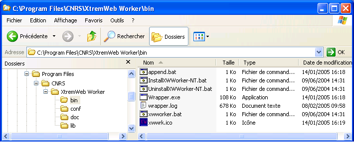
The `bin/' directory contains several scripts as shown in figure 3.
Among them are:
xwworker.bat; double click to manually run the XWHEP worker;
InstallXWWorker-NT.bat; double click to install the XWHEP worker as Windows service;
UninstallXWWorker-NT.bat; double click to uninstall the XWHEP worker Windows service.
Preparing the worker package as Windows service is the best way to use it. It will then run in background without disturbing the owner of the machine; by default, it will only compute when the owner don't use it machine. See section configuration file for more information on configuring the worker.
Double click on `bin/InstallXWWorker-NT.bat' to install the worker as Windows service as shown in figure "Install NT service".
Installing an NT service requires administrator privileges; please ask your system administrator, if needed.
Install the worker as NT service
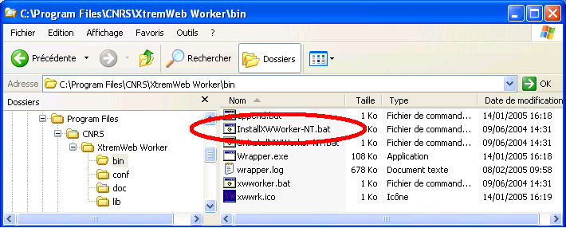
You can check that the worker service has been correctly installed.
This procedure will also help to manage the service :
manually start the service;
manually stop the service;
To do so, first right click on your workstation icon in your start menu or
on your desktop, then click on "manage" item, as shown in figure "Manage NT workstation".
Select the "manage" option
This open the workstation management window.
Select the "services and applications" item, then the "services" item
and look for the XWHEP service as shown in figure "NT service installed".
It should be the last one in the list, depending of your configuration.
If you don't find the XWHEP worker in the list, it has not been correctly installed. Please, return to Install the worker as NT service and try again.
Worker installed as NT service
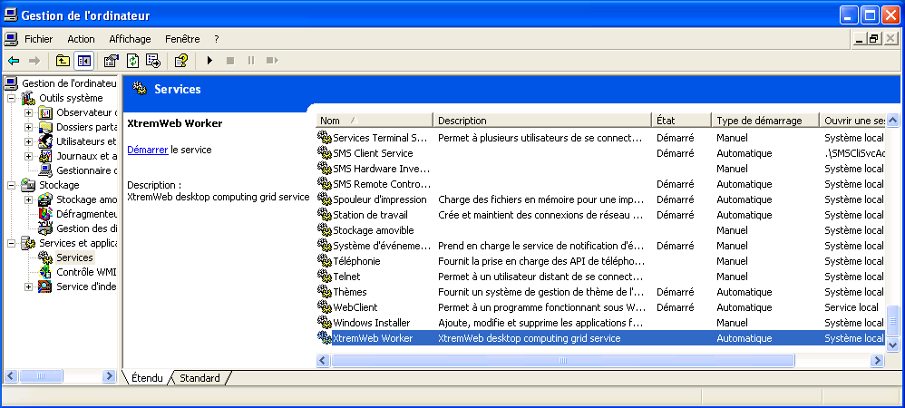
You can click on the XWHEP worker service to select it and
click on the "Start" item as shown in figure "Start the NT service".
Note that you don't have to manually start the XWHEP worker; it
is configured to start at every boot of your machine.
Start the worker NT service
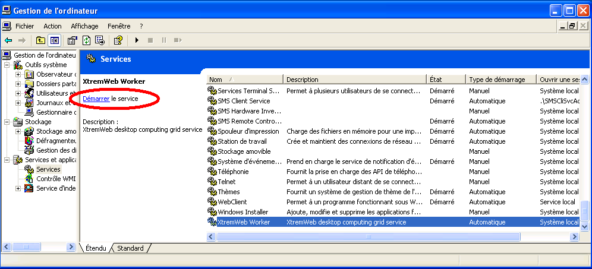
A pop-up window then appears with a progression bar.
as shown in figure "Starting the NT service".
If something goes wrong (not enough privileges, Java not correctly installed...) a warning window appears. Please, return to Install the worker as NT service and try again.
Starting the worker NT service
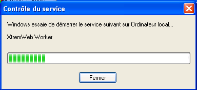
If the service has successfully been started, the "state" column should
display "started" (noted as
Démarré
in figure "NT service started")
for the XWHEP worker service
as shown in figure "NT service started".
Worker NT service started
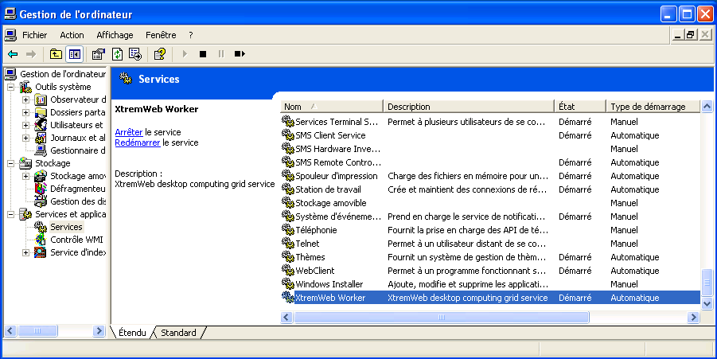
If you want to stop the XWHEP worker service, click to select it and
click on the "Stop" item as shown in figure "Stop the NT service".
Stop the worker NT service
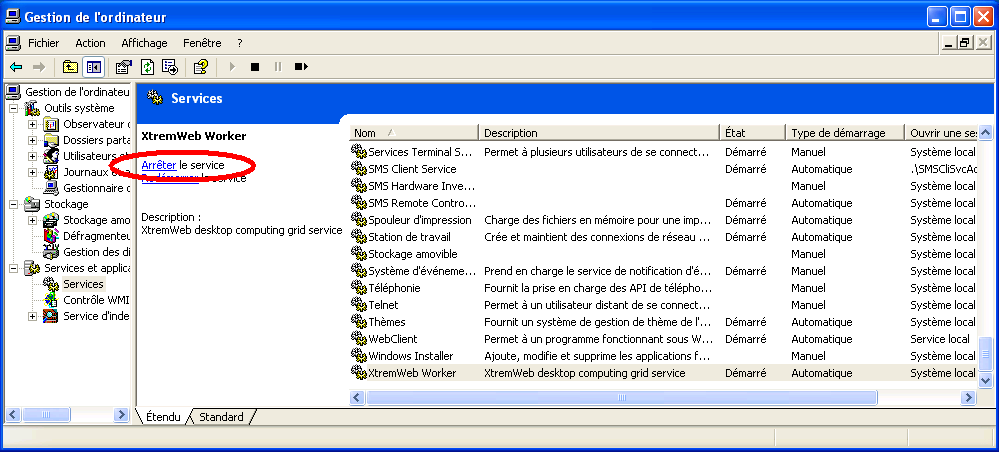
If you want to completly remove the XWHEP worker service,
double click on `bin/UninstallXWWorker-NT.bat' as chown in
figure "Uninstall NT service".
You must have enough privileges to do so. If needed, please ask your system administrator.
Note that this does not remove the XWHEP package from your computer.
To do so, please use the standard Windows procedure through the "configuration pannel".
Uninstall the worker NT service
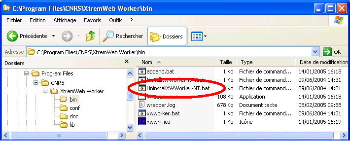
Please see XWHEP worker to see how to configure and run the worker.
If you have followed the instructions detailed in Win32., the worker is automatically launched for you.
Otherwise, you have to double click on `xwworker.bat'.
| [ < ] | [ > ] | [ << ] | [ Up ] | [ >> ] | [Top] | [Contents] | [Index] | [ ? ] |
Control the worker
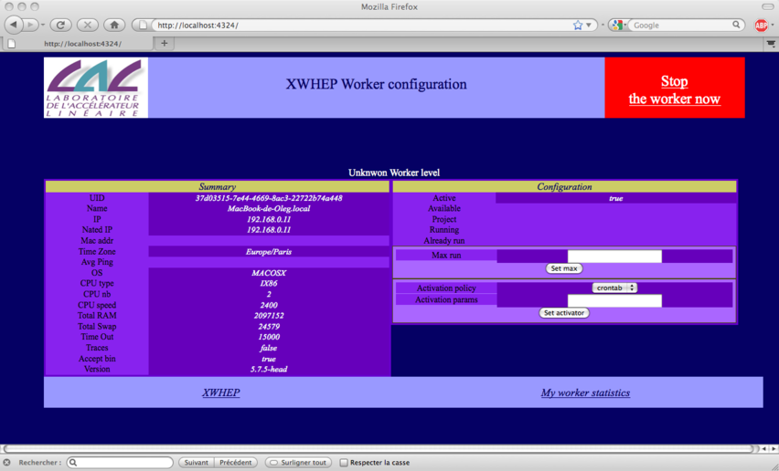
| [ < ] | [ > ] | [ << ] | [ Up ] | [ >> ] | [Top] | [Contents] | [Index] | [ ? ] |
The client is the distributed part in charge of the platform usage. It aims to insert/delete applications,
users and jobs, as to retrieve results.
.
Actions are executed accordingly the user privilege level.
| [ < ] | [ > ] | [ << ] | [ Up ] | [ >> ] | [Top] | [Contents] | [Index] | [ ? ] |
The client configuration file is the same as for the worker.
Please refer to the worker configuration file.
| [ < ] | [ > ] | [ << ] | [ Up ] | [ >> ] | [Top] | [Contents] | [Index] | [ ? ] |
The client is a console application which aims to manage datas, applications, users and jobs, as to retrieve job results.
Scripts to run the client are stored in the `bin/' directory.
Be aware that the script uses some definition in `bin/xtremwebconf.sh'.
Several scripts are provided.
The client accepts both command and parameters; next sections detail them.
| [ < ] | [ > ] | [ << ] | [ Up ] | [ >> ] | [Top] | [Contents] | [Index] | [ ? ] |
The client accepts some parameters which may be combined with all client actions.
--xwhelp to get some helps
this parameters is optionnal ;
this parameters needs no argument ;
if this parameter is provided, the script shows some helps and exits.
--xwgui to get the graphic user interface (see The client GUI)
this parameters is optionnal ;
this parameters needs no argument ;
if this parameter is provided, all other parameters are not used ;
if this parameter is provided, the client GUI is shown.
--xwconfig <a config file> to provide a client configuration file.
this parameters is optionnal ;
this parameters needs one argument : a config file;.
if this parameter is not provided, the script looks whether a `$HOME/.xtremweb/xwrc' file exists.
--xwmacro <a macro file> to provide a "macro" file (see macro file description.)
this parameters is optionnal;
this parameters needs one argument : a "macro" file;.
if this parameter is provided, all other parameters are not used.
--xwformat <a format> to get output in raw text, HTML, XML or CSV
this parameters is optionnal.
this parameters needs one argument which may take one of theses values;
XML to get the output as XML;
HTML to get the output as HTML;
CSV to get the output as comma separated values.
if this parameter is not provided, default output is XML.
--xwclean to clean the cache.
--xwverbose to get the most verbose mode.
--xwnoverbose to get the least verbose mode.
--xwclientloopdelay to set the client time out.
Some client parameters apply to specific client actions only; they are listed here and explained later in client actions sections.
--xwlabel <a label> to give a label to the job when submitting a new job
--xwsession <session UID> to insert a job into a session when submitting a new job
--xwgroup <group UID> to insert a job into a group when submitting a new job
--xwcert <URI | UID> to associate an X509 certificate when submitting a new job
--xwexpectedhost <host UID> to associate a worker when submitting a new job
--xwenv <URI|UID> to provide an environment when submitting a new job
--xwstdin <URI|UID> to provide a standard input when submitting a new job
--xwnoextract to tell the client to not expand the archive when downloading a result (this cancels --xwrmzip)
--xwrmzip to tell the client to remove the archive when a result has been downloaded and extracted (this has no effect if --xwnoextract has also been provided)
--xwnoerase to tell the client to not delete job when result has been downloaded
--xwoverride to tell the client to redownload a file even if it exists on local FS
| [ < ] | [ > ] | [ << ] | [ Up ] | [ >> ] | [Top] | [Contents] | [Index] | [ ? ] |
There are two client actions that can be applied to all kind of object.
--xwremove <UID|URI> to remove an object specified by its UID or URI. An object can be a user, an application, a job, a data... anything handled by the platform.
A script to remove an object is provided with the package: `bin/xwrm'. Any removed object is marked as deleted in the database.
--xwchmod <UID|URI> to modify an object access rights, specified by its UID or URI. An object can be a user, an application, a job, a data... anything handled by the platform.
A script to change the access right of an object is provided with the package: `bin/xwchmod'.
| [ < ] | [ > ] | [ << ] | [ Up ] | [ >> ] | [Top] | [Contents] | [Index] | [ ? ] |
| [ < ] | [ > ] | [ << ] | [ Up ] | [ >> ] | [Top] | [Contents] | [Index] | [ ? ] |
The client accepts some parameters dedicated to user management : insert and delete users to/from the plateform.
The user management accepts some common parameters.
Here follow the client parameters dedicated to user management.
--xwgetusers : list the users present in the plaform.
this parameters needs no argument;
this action requires administrator privileges to get full users list; otherwise one gets its own user informations only.
--xwsenduser <login> <password> <email> <rights> <usergroup> [--xwcert <X.509 cert or proxy>] insert a new user binary in the platform;
this action requires administrator privileges;
this parameters needs four arguments in the exact following order:
login the login for this user.
password the password for this user.
email the email of this user.
rights the privilge level for this user.
usergroup to insert the user in a specific group.
-xwcert to specify the certificate to use if needed for authentication.
the login must be unic in the platform. If this login already exists, the insertion fails.
A set of scripts to manage the users is provided with the package : `bin/xwusers', `bin/xwsenduser', `bin/xwusergroups', `bin/xwsendusergroup'...
| [ < ] | [ > ] | [ << ] | [ Up ] | [ >> ] | [Top] | [Contents] | [Index] | [ ? ] |
The client accepts some parameters dedicated to data management : insert, retreive and delete data to/from the plateform.
The data management accepts some common parameters.
Here follow the client parameters dedicated to data management.
--xwgetdatas : list the datas present in the plaform.
this parameters needs no argument.
--xwsenddata <Application Name> <CPU> <OS> <URI to binary> insert a new data in the platform;
this option needs four arguments in the exact following order:
Application Name is a name of your choice for this application;
CPU indicates the type of architecture the binary file has been compiled for (ix86, alpha, ...)
OS indicates the type of operating system the binary file has been compiled for (Linux, win32, ...)
URI is the path as a URI to the binary file for this application that will be executed by workers for jobs associated with this application.
this set of four arguments must be UNIC in the platform. If you insert e new application with the same arguments, then the existing application will be replaced by the new one. If you have more than one binary for one application (e.g, for Mac OS X, Win32, Linux...), insert an application for each binary, with the same Application Name, but with different CPU, OS and URI options.
A set of scripts to manage the datas is provided with the package : `bin/xwdatas', `bin/xwsenddata'.
| [ < ] | [ > ] | [ << ] | [ Up ] | [ >> ] | [Top] | [Contents] | [Index] | [ ? ] |
The client accepts some parameters dedicated to application management : insert and delete applications to/from the plateform.
The application management accepts some common parameters.
Here follow the client parameters dedicated to application management.
--xwgetapps : list the applications present in the plaform.
this parameters needs no argument.
--xwsendapp <Application Name> <CPU> <OS> <URI to binary> insert a new application in the platform;
this action requires administrator privileges;
this option needs four arguments in the exact following order:
Application Name is a name of your choice for this application;
CPU indicates the type of architecture the binary file has been compiled for (ix86, alpha, ...)
OS indicates the type of operating system the binary file has been compiled for (Linux, win32, ...)
URI is the path as a URI to the binary file for this application that will be executed by workers for jobs associated with this application.
this set of four arguments must be UNIC in the platform. If you insert e new application with the same arguments, then the existing application will be replaced by the new one. If you have more than one binary for one application (e.g, for Mac OS X, Win32, Linux...), insert an application for each binary, with the same Application Name, but with different CPU, OS and URI options.
A set of scripts to manage the applications is provided with the package : `bin/xwapps', `bin/xwsendapp'.
| [ < ] | [ > ] | [ << ] | [ Up ] | [ >> ] | [Top] | [Contents] | [Index] | [ ? ] |
The client accepts some parameters dedicated to jobs management : insert and delete jobs to/from the plateform.
The job management accepts some common parameters.
Here follow the client parameters dedicated to job management.
--xwgetworks [jobUID, jobUID...] : list job status.
this returns jobs for the user as provided in the configuration file;
this parameters needs zero or more arguments;
if no job UID is provided, this retrieves all jobs for the user;
job UID : one or more space separated jobUID may be provided.
--xwgettasks [jobUID, jobUID...] : list status of job instances (i.e. job and associated running worker).
this returns job instance status for the user as provided in the configuration file;
this parameters needs zero or more arguments;
job UID job UID to retreive instance status for.
--xwsendwork <Application Name> [--xwenv <zip file> ] [--xwcert <cert or proxy>] [--xwlabel <label> ] [application parameters] [ '<' <input file>] insert a new job.
this requires job insertion privilege level (rights above or equal to 5 as shown by @ref{xwusers}).
this parameters needs at least one argument;
application name is required; it is the name of an installed application as shown by @ref{xwapps};
-xwenv <zipfile> is optionnal and specify a zip file containing a set of files needed by the job at runtime. This is known as the job environment. This option accepts a zip file, a directory structure or a file name. In the last cases, the client create a new zip file containing the provided directory and/or files for the job.
-xwlabel <label> is optionnal and specifies a symbolic label of your choice for this job.
-xwcert <cert or proxy> is optionnal and specifies what X.509 certificate or proxy tu use for this job.
application parameters is optionnal and specific to the requested application;
input file is optionnal and specify standard input for your job (this must be after the character '<');
A set of scripts to manage jobs are provided with the package in the `bin/' directory.
xwworks;
xwtasks.
xwsendwork.
| [ < ] | [ > ] | [ << ] | [ Up ] | [ >> ] | [Top] | [Contents] | [Index] | [ ? ] |
The client accepts some parameters dedicated to job results management : retreive and delete job results.
The results management accepts some common parameters.
Here follow the client parameters dedicated to results management.
--xwresult [jobUID, jobUID...] : retrieve job results.
this downloads job results for the user as provided in the configuration file. Resuls are stored on the client runtime directory.
this parameters needs zero or more arguments;
if no job UID is provided, this retrieves all results for the user;
job UID : one or more space separated jobUID may be provided.
| [ < ] | [ > ] | [ << ] | [ Up ] | [ >> ] | [Top] | [Contents] | [Index] | [ ? ] |
The client accepts "macro" file, which is just a text file with one command per line.
A macro file is provided to the client with the parameter --xwmacro <a macro file>.
This parameter cancels all other client parameters but the --xwconfig parameter.
Examples:
xtremweb.client --xwmacro <a macro file> xtremweb.client --xwconfig <a configuration file> --xwmacro <a macro file> |
| [ < ] | [ > ] | [ << ] | [ Up ] | [ >> ] | [Top] | [Contents] | [Index] | [ ? ] |
When launching the client with the -xwgui parameter (or when launching either the Mac OS X or Windows client), the main frame pops up as shown in figure "The client main frame".
As shown on the title, we are not connected to the platform yet.
The client main frame
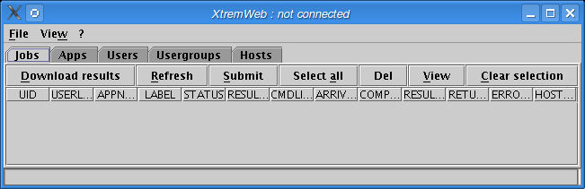
To connect, please select "Login as..." option in the "File" menu (figure The "Login as..." menu option).
The "Login as..." menu option
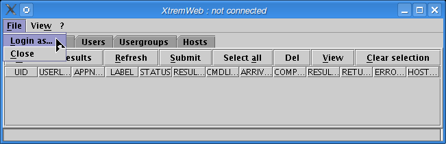
The login dialog pops up as shown on figure "Login dialog". You must fill the three fields.
The login dialog
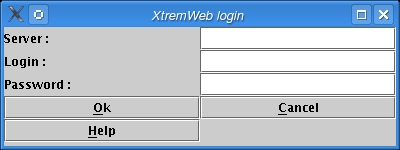
If the server is not reachable the server error dialog pops up (figure Server error dialog).
The server error dialog
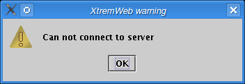
If the login and/or password is not valid, or if the user is not authorized to connect, the error dialog pops up (figure Connect error dialog).
The connect error dialog
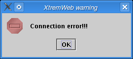
Once connected, the title displays the login (figure Connected).
The user is connected
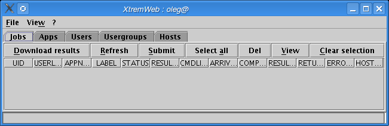
Click on "Refresh" to get your jobs list. The progress bar shows the download progression (figure Retreiving jobs).
Figure 20 : Retreving jobs
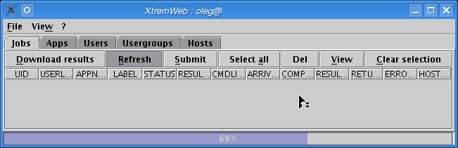
As the download completes, your jobs are listed. The status bar shows the total of rows (figure Jobs retreived).
Jobs retreived
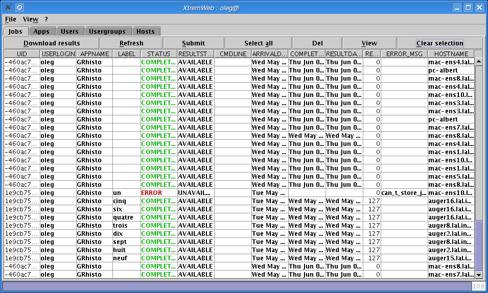
Click on "Submit" to submit a new job (figure Submit a new job).
Submit a new job
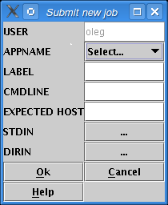
Select an application from the dropdown menu (figure Select an application).
Submit a new job; select an application
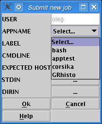
Give a job label (this is optionnal) (figure Give a label).
Figure 24 : Submit a new job; give a label
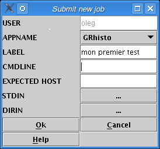
Click on "View" (shown on figure Jobs retreived) to see job details (figure Job details).
Job details
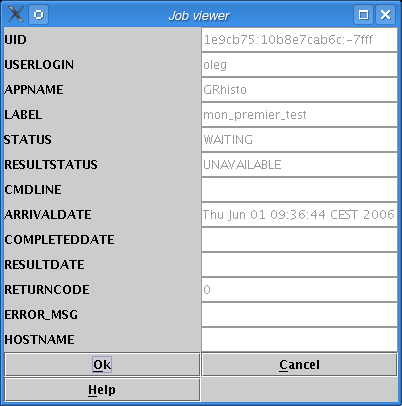
| [ < ] | [ > ] | [ << ] | [ Up ] | [ >> ] | [Top] | [Contents] | [Index] | [ ? ] |
| 8.1 The Gliding-in approach | ||
| 8.2 Bridging XtremWeb and EGEE. | ||
| 8.3 Configuring the XWHEP bridge | ||
| 8.4 Launching the XWHEP bridge |
Pilot Jobs is a way to use a Grid infrastructure to deploy end user jobs with an external scheduler (i.e. a scheduler which is not part of the infrastructure itself). XtremWeb and Condor teams have introduced this as Gliding-in in "XTREMWEB & CONDOR : SHARING RESOURCES BETWEEN INTERNET CONNECTED CONDOR POOLS." (O. Lodygensky, G. Fedak, F. Cappello, V. Neri, M. Livny, D. Thain at CCGRID 2003, Tokyo, JAPAN; May 12-15, 2003.)
Security, monitoring and logging are the main issues in Pilot Jobs; see http://edms.cern.ch/document/855383.
XWHEP solves these issues thanks to its innovative features:
user rights management
user rights delegation
user groups
user group applications
Security is ensured at three levels:
computing node.
XWHEP includes a sandbox to isolate end user job computation
only validated applications from repository are candidate to run on SG nodes
Application and data integrity.
application repository and data servers (including XWHEP) ensure integrity
User authentication
only X.509 certiÞed users can use SG nodes
users provide proxy certiÞcate to submit a job to XWHEP scheduler
this proxy is used to submit Pilot Jobs to SG
Pilot Jobs
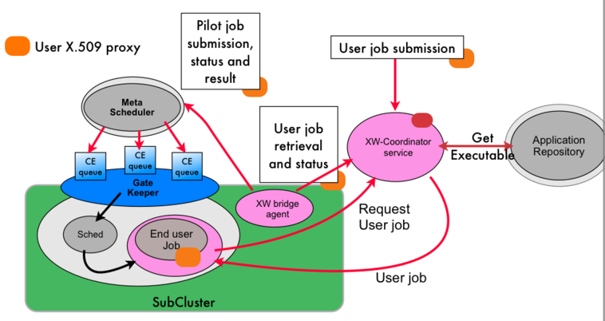
| [ < ] | [ > ] | [ << ] | [ Up ] | [ >> ] | [Top] | [Contents] | [Index] | [ ? ] |
The Gliding-in approach to cluster resources spread in different Condor pool using the Global Computing system (XtremWeb) was first introduced in xtremweb-condor. The main principle consist in wrapping the XtremWeb worker as regular Condor task and submit this task to the Condor pool. Once the worker is executed on a Condor resource, the worker pulls jobs from the DG~server, executes the XtremWeb task and return the result to the XtremWeb server. As a consequence, the Condor resources communicates directly to the XtremWeb server. Similar mechanisms are now commonly employed in Grid Computing condor_grid2. For example Dirac uses a combination of push/pull mechanism to execute jobs on several Grid clusters. The generic approach on the Grid is called a pilot job. Instead of submitting jobs directly to the Grids gatekeeper, this system submits so-called pilot jobs. When executed, the pilot job fetches jobs from an external job scheduler.
The gliding-in or pilot job approach has several advantages. While simple, this mechanism efficiently balance the load between heterogeneous computing sites. It benefits from the fault tolerance provided by the DG~server; if Grid nodes fail then jobs are rescheduled to the next available resources. Finally, as the performance study of the Falkon falkon system shows, it gives better performances because series of jobs do not have to go through the gatekeeper queues which is generally characterized by long waiting time, and communication are direct between the computing element~(CE) and the DG~server without intermediate agent such as the superworker. From the security point of view, this approach breaks the Grid security rules which because jobs owner may be different than pilot job owners. This is a well known issue of pilot jobs and new solution such as gLExec are proposed to circumvent this security hole.
| [ < ] | [ > ] | [ << ] | [ Up ] | [ >> ] | [Top] | [Contents] | [Index] | [ ? ] |
| 8.2.1 User authentication and execution logging. | ||
| 8.2.2 Applications, parameters and results protection. | ||
| 8.2.3 Node integrity. | ||
| 8.2.4 Access confinement. |
Our goal is to safely aggregate EGEE worker nodes in a single XtremWeb network. In this network, we assume that the users connect to the dispatcher administration domain to submit tasks. XtremWeb has the responsibility to ensure user authentication, hosts (workers) integrity, application and results protection and user execution logging.
In the rest of the paper, we based our study of the security model on the gliding-in technology. XtremWeb Workers are submitted to EGEE computing elements using JSDL wrappers.
| [ < ] | [ > ] | [ << ] | [ Up ] | [ >> ] | [Top] | [Contents] | [Index] | [ ? ] |
The coordinator site manages a list of authorized users as ACLs. It is the responsibility of the system administrator to register new users (and revoke non desired ones) on the coordinator. After registration, the coordinator provides a key to be used by the user for each subsequent connection. For each connection, a challenge is ran in order to ensure that the user is registered on the coordinator. All communications between the user XW client and the coordinator are encrypted using SSL. Then the coordinator works as a proxy for the user: all tasks are submitted to the workers through the coordinator credential. All executions on the workers are logged in the security perspective: all tasks contain a descriptor with the actual user credential so that workers and coordinator can take appropriate corrective action (user revocation), in case of security problem.
The design does not currently rely on certificates and presents a certain degree of risk for "Man is the Middle" ( MIM) attacks but risks are very limited since 1) attacks should origin from within EGEE subclusters only (due to TCP protocols), and 2) workers and clients software include coordinator public key, then if one is able to securely ensure worker and client binaries installation to dedicated pools, the full system is not subject to MIM attacks since key exchanges will not be necessary any more.
A certification system based on X.509 certificates is under integration in XtremWeb. Subsequent experiments and futures XtremWeb installations will implement one, based on Open-SSL, allowing extension of clients and workers authentication by the coordinator.
| [ < ] | [ > ] | [ << ] | [ Up ] | [ >> ] | [Top] | [Contents] | [Index] | [ ? ] |
EGEE subclusters belonging to different administration domains fetch applications and tasks, and store results on the central coordinator. The only security issue concerning applications, parameters and results transfers is then about the connections between EGEE worker nodes and the coordinator. To ensure connection security between domains, 1) every connection from any client and worker to the coordinator is encrypted through SSL tunnels; 2) workers can only connect to the coordinator for which they have the public key. These two mechanisms prevent malicious participants to be able to intercept and read any connection, to connect to the coordinator and EGEE worker nodes to connect to a wrong XtremWeb coordinator.
| [ < ] | [ > ] | [ << ] | [ Up ] | [ >> ] | [Top] | [Contents] | [Index] | [ ? ] |
If, for any reason, a malicious user succeeds on accessing the system and launching an aggressive application, XtremWeb workers still protect their host by implementing sand-boxingSANDBOX2,SANDBOX3,SANDBOX1 for binary applications. This is a secure way to execute applications, providing rights to do some actions and denying some others. One should note that Java applications are always executed inside a virtual machine which includes securityJAVASECURITY; XtremWeb uses this functionality in two levels, one for the worker itself and a more restrictive one for the downloaded Java byte code. On the contrary, binary (or native) applications have access to the full hosting system by nature; workers are configured to run any task of that type inside a sand-box which is fully customizable, from memory usage to file system operations.
Java and sand-boxes, have performance costsSANDBOX-PERF; one can then disable this functionality on highly secured systems, such as clusters under a fully closed firewall.
| [ < ] | [ > ] | [ << ] | [ Up ] | [ >> ] | [Top] | [Contents] | [Index] | [ ? ] |
XtremWeb 2.0.0 introduces the notion of user rights and access rights. These new features permit to extend user actions over the platform as well as to define groups.
Access rights must be understood as linux file system ones (e.g. 0x755, uog+r etc.) and are used to define data (which is also a new paradigm in XtremWeb 2.0.0 but not discuss in this paper), application and job accesses.
The default access is 0x755 which grants full access (read, write, execute) to owner, and limited access (read, execute) to users belonging to the owner group read and execute, as well as other users. Denying access to non group users, for example, consists to set access rights to 0x750.
The middleware includes the xwchmod command to do so.
Any user can insert its own applications in the platform. This feature could lead to security hazards since this could allow users to insert malicious applications.
This is solved by access rights. A standard user can only insert private applications; any submitted jobs referring private applications are private too. There is no way to modify these; even xwchmod can't help to modify access rights of private entities (applications or jobs). A private entity has its access rights set to 0x700 which grants owner access only.
Inserting group or public entities needs advanced privileges which grants this action.
User rights, associated with access rights, permit to define public, groups and private levels.
They define the action users can perform over the platform.
The three main level rights are standard, worker and advanced.
The standard level grants data management, job submission and private application insertion as defined earlier.
The advanced level grants full access to the platform including private, group and public entities, as well as users, user groups and workers management.
To understand the last right level, worker, one must clearly understand that workers run under an identity registered on the coordinator. When a worker sends a message to request a job to compute, or for any other reason, it presents its identity, registered as an user identity and defining user rights level.
This level right permits to delegate user rights to workers so that they can access entities as if they were the entity owner.
A public worker can bypass entities access rights in order to update them even if their access rights do not allow that action.
This is used to update jobs status to COMPLETED when it has successfully been computed by a worker,
or to store jobs results and set the owner to the job owner.
At installation time, the platform includes a specific user defined with worker level right, aiming to deploy public workers.
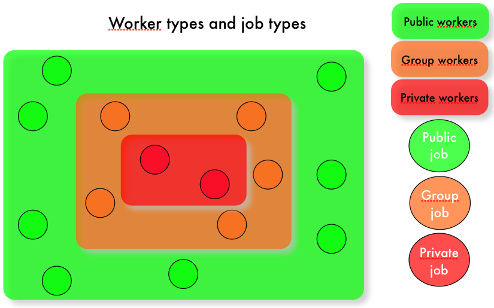
On the other hand, we can also deploy private workers.
Workers are private ones if they use a standard identity without the worker user rights level.
Private workers will only compute private jobs.
Finally we can deploy group workers.
Workers are group ones if they use an identity included in a group and defined with the worker user rights level.
Group workers will only compute jobs of the same group.
The figure @ref{fig:groups} shows worker groups and the types of job they can run. We see that private jobs are run on private workers only, and groups jobs are run on group workers only. Public jobs can only be run on public workers.
| [ < ] | [ > ] | [ << ] | [ Up ] | [ >> ] | [Top] | [Contents] | [Index] | [ ? ] |
You will find a `conf/xtremweb.server.conf' file in the distribution.
If you have downloaded the sources distribution, the installation process create it for you in your installation directory
by the make install command.
The configuration of the file consists of a pair of keys and their values separated by the `=' character. A line begining by `#' is a comment.
Server configuration
ModulesLogged sets the expected modules list. Existing modules are DBI, Comm, Task:
XWServer contains a space separated servers list; this is used for replication only.
port.tcp port to connect the server through TCP (default 4321)
port.udp port to connect the server through UDP (default 4322)
port.worker.http port where the worker may listen at (default 4323)
port.http port to connect the server through HTTP (default 4324)
port.https port to connect the server through HTTPS (default 4325)
port.xlmrpc port to connect the server through XML RPC (default 4326)
port.sunrpc port to connect the server through SUN RPC (default 4327)
java.nio defines wether to use NIO. Forced to false with HTTP layer (default 4329)
Database configuration
XWdbName is the database name Default in xtremweb.sql :"xtremweb" .
XWdbUser is the name of the user granted to access the database.
XWdbPass is the password of the user granted to access the database.
Security configuration
XWkeyStore Put here the name of file containing the private key of the server and its certificate.
XWpassPhrase is the password needed to access that file `XWCertPass' by default.
Logging facilities
There are four levels: debug, info, warn and error.
| [ < ] | [ > ] | [ << ] | [ Up ] | [ >> ] | [Top] | [Contents] | [Index] | [ ? ] |
Scripts to launch the server are stored in the `bin/' directory.
Be aware that the script uses some definition in `bin/xtremwebconf.sh'.
One should read and edit this file.
The script expect the configuration file to be located in `conf/' directory.
The script `bin/xtremweb.server' helps to manage the server. It request one argument which may take four values : console, start, stop and restart:
start starts the server as daemon
console starts the server in the foreground (not as daemon)
stop stops the server
restart stops and restarts the server.
Example:
xtremweb.server start |
To launch the server, you must have sufficient privileges because the script try to execute the server under the "xtremweb" user defined in your `xtremwebconf.sh' file.
| [ < ] | [ > ] | [ << ] | [ Up ] | [ >> ] | [Top] | [Contents] | [Index] | [ ? ] |
Please report any bugs, remarks, questions etc. to our Trac web site: http://trac.lal.in2o3.fr/DGHEP
| [ < ] | [ > ] | [ << ] | [ Up ] | [ >> ] | [Top] | [Contents] | [Index] | [ ? ] |
"EDGeS:A Bridge Between Desktop Grids and Service Grids"
G. Fedak, H. He, O. Lodygensky, Z. Balaton, Z. Farkas, G. Gombas, P. Kacsuk, R. Lovas, A. Csaba Marosi, I. Kelley, I. Taylor, G. Terstyanszky, T. Kiss, M. Cardenas-Montes, A. Emmen, F. Araujo.
ChinaGrid 2008, Dunhuang, Gansu, CHINA; Aug 20-22, 2008.
"Des systemes client-serveur aux systemes pair a pair"
F. Cappello, G. Fedak, T. Morlier, O. Lodygensky
Chapter in "Enclyclopedie Vuibert"; 2005.
RPC-V: Toward Fault-Tolerant RPC for Internet Connected Desktop Grids with Volatile Nodes.
S. Djilali, T. Herault, O. Lodygensky, T. Morlier, F. Cappello, G. Fedak.
Pittsburgh PA, USA; November 2004.
Programming Models, Security, Tests and Convergence with Grid.
F. Cappello, S. Djilali, G. Fedak, T. Herault, F. Magniette, O. Lodygensky, V. Neri.
Chapter in "Future Generation Computer Systems, Volume 21, Issue 3, March 2005, Pages 417-437"
XtremWeb & Condor : sharing resources between Internet connected Condor pools.
O. Lodygensky, G. Fedak, F. Cappello, V. Neri, M. Livny, D. Thain.
Tokyo, JAPAN; May 12-15, 2003.
Augernome & XtremWeb: Monte Carlos computation on a global computing platform.
O. Lodygensky, G. Fedak, F. Cappello, V. Neri, A. Cordier
CHEP 03, La Jolla CA, USA; March 24-28, 2003.
| [ < ] | [ > ] | [ << ] | [ Up ] | [ >> ] | [Top] | [Contents] | [Index] | [ ? ] |
| Jump to: | A B C D E F G H I J L M N O P R S T U W X |
|---|
| Jump to: | A B C D E F G H I J L M N O P R S T U W X |
|---|
| [Top] | [Contents] | [Index] | [ ? ] |
Since XWHEP 5.0.0, the platform also permits to use X509 certificates, but this is still usable under certains circunstances only.
| [Top] | [Contents] | [Index] | [ ? ] |
| [Top] | [Contents] | [Index] | [ ? ] |
This document was generated by Oleg Lodygensky on September, 11 2009 using texi2html 1.70.
The buttons in the navigation panels have the following meaning:
| Button | Name | Go to | From 1.2.3 go to |
|---|---|---|---|
| [ < ] | Back | previous section in reading order | 1.2.2 |
| [ > ] | Forward | next section in reading order | 1.2.4 |
| [ << ] | FastBack | beginning of this chapter or previous chapter | 1 |
| [ Up ] | Up | up section | 1.2 |
| [ >> ] | FastForward | next chapter | 2 |
| [Top] | Top | cover (top) of document | |
| [Contents] | Contents | table of contents | |
| [Index] | Index | index | |
| [ ? ] | About | about (help) |
where the Example assumes that the current position is at Subsubsection One-Two-Three of a document of the following structure:
This document was generated by Oleg Lodygensky on September, 11 2009 using texi2html 1.70.